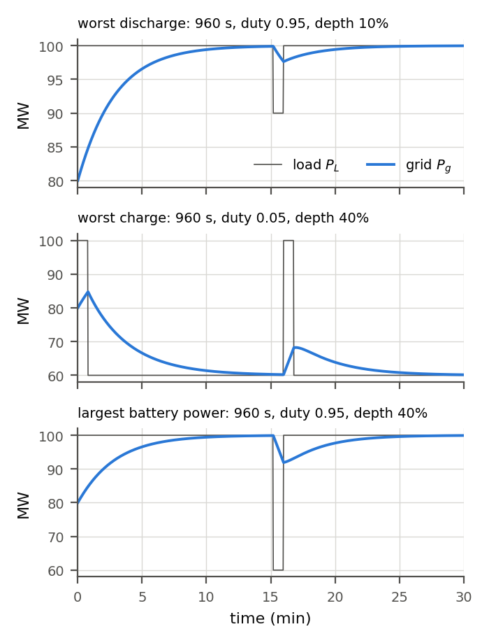
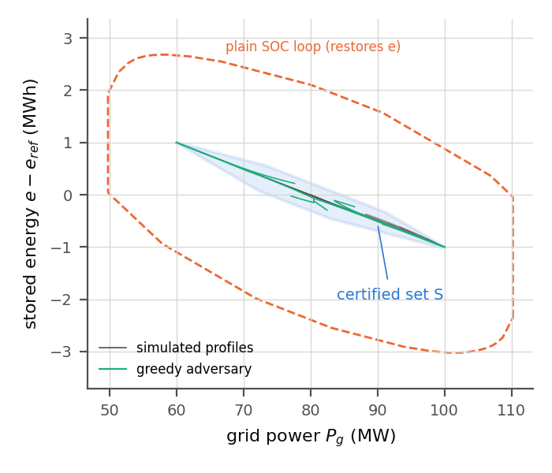
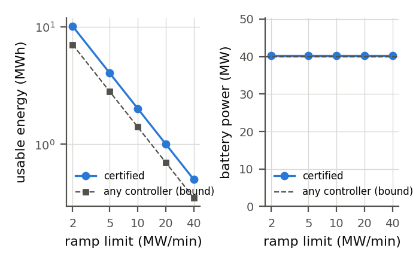
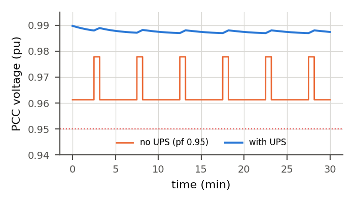
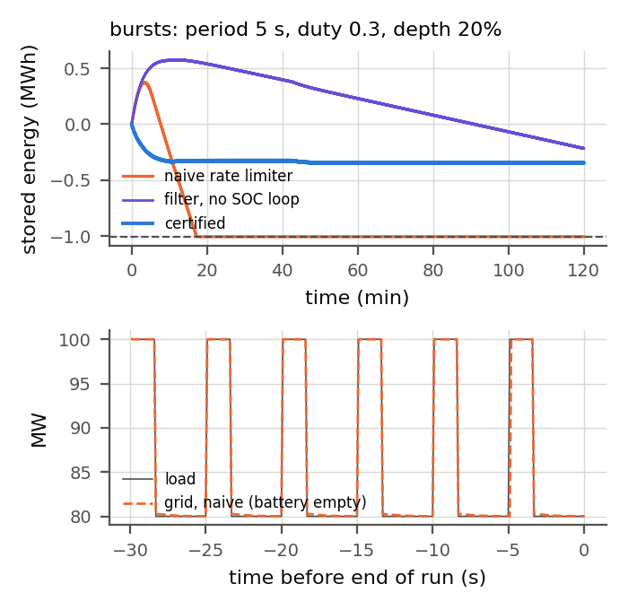

Department of Grid-Side Guarantees Queens, New York
Certified grid-side behavior for an AI UPS
An AI training campus steps its power by 40 MW in an instant, over and over. A battery and inverter between the campus and the grid can hide that. This is a proof that it does: for every load profile in range, the grid sees a bounded ramp, the voltage stays in its band, and the battery never saturates or runs empty.
Public, assumed-parameter model. Not ON.energy hardware, data or controller.
Any measurable profile in [60, 100] MW, steps allowed
Grid ramp limit
10 MW/min (swept 2 to 40)
Proof method
Interval branch-and-bound, outward rounding: 27,230 boxes, depth 40, 1.4 s
Battery needed
40.28 MW, 2.013 MWh usable (1.43× the lower bound for any controller)
Worst voltage
1.35% deviation against a 5% band, never steps
Status
Proved on a public model. Code tested, not formally verified.
The claim
Four statements, each proved for every admissible load
Proposition 1 · battery The set S, a 32-sided polygon in (grid power, stored energy), is forward invariant. So the battery power stays within 40.28 MW, stored energy within ±1.006 MWh, and grid power within [59.81, 100.19] MW.
Theorem 1 · ramp The grid draws exactly Pg, and Pg never changes faster than R. The clip does it by construction, but only because Proposition 1 keeps the battery from saturating.
Corollary 1 · voltage PCC voltage stays in [0.9865, 0.9927] pu and moves at most 0.165% per minute. The linearization is within 2.94×10⁻³ pu of the exact formula, which matches pandapower AC to 6.7×10⁻¹² pu.
Proposition 2 · lower bound Any causal controller holding ramp R needs at least 40 MW and ΔP²/(2ηR) of energy: 1.404 MWh at 10 MW/min.
Exhibit A: worst-case loads
What the campus does, what the grid sees

Campus load (steps) against grid power (bounded ramp) on the three hardest profiles found.
Exhibit B: the certified set
32 faces, every one proved by branch-and-bound

The invariant set S in (grid power, stored energy), with simulated trajectories that stay inside. A greedy adversary reached ±1.000 MWh against the certified ±1.006, so the set is close to tight.
Exhibit C: how big a battery
Each row re-proved at its own ramp limit
Ramp limit
Usable energy
Power
Lower bound
2 MW/min
10.064 MWh
40.28 MW
7.018 MWh
5 MW/min
4.026 MWh
40.28 MW
2.807 MWh
10 MW/min
2.013 MWh
40.28 MW
1.404 MWh
20 MW/min
1.006 MWh
40.28 MW
0.702 MWh
40 MW/min
0.503 MWh
40.28 MW
0.351 MWh

Energy scales as 1/R. The certified design stays at 1.43× the bound for any controller.
Exhibit D: the feeder voltage
With and without the UPS

On this assumed feeder both stay inside the band. Without the UPS a 40 MW step moves the voltage 1.65% instantly; with it the voltage never steps.
Exhibit E: why each piece is there
Same battery, 140 burst trains
CONTROLLER BATTERY EMPTIED GRID SEES
no UPS n/a 400 MW/s steps
plain ramp limiter, no charge loop 60 of 140199.9 MW/s after empty
certified filter, charge loop removed 7 of 140 ramp limit lost once empty
certified controller 0 of 140≤ 10 MW/min, always

The fastest failure: period 5 s, duty 0.3, depth 20%. The plain limiter runs empty after 17.2 minutes.
What this does not prove
It's a public model with assumed parameters, not anyone's real hardware. It covers the grid-side power and a linearized feeder voltage, not fast inverter dynamics, faults or protection. 16 of 45 designs in the search got no certificate, which is a limit of the search, not a proof that none exists. The branch-and-bound starts from a padded floating-point polygon, and the code is tested, not formally verified.